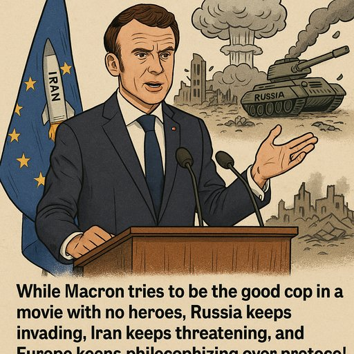

Publicado em 2025-06-24 10:23:42
Ou como comparar granadas com extintores para agradar à plateia do absurdo
Em mais um episódio do teatro europeu do século XXI, Emmanuel Macron, presidente da République e aspirante a diplomata universal, decidiu oferecer-se como árbitro moral do mundo — não pediram, mas ele foi. Desta vez, tentou encontrar paralelismos entre a brutal e continuada agressão russa à Ucrânia e uma eventual ação preventiva dos EUA face à ameaça nuclear do Irão. Sim, leu bem: comparou cenários como quem mistura foie gras com sardinha em lata — c’est la diplomatie!
Diz Macron, com ar compenetrado e sobrancelha levantada, que os princípios do direito internacional devem ser universalmente aplicados. Concordamos. Mas quando se começa a usar a régua da moral para medir tragédias de natureza oposta, a régua parte-se. A invasão da Ucrânia não foi um pré-ataque preventivo, nem um erro estratégico. Foi um ato de barbárie crua, documentado em vídeos, cadáveres e cidades arrasadas.
Mas Macron, com o seu eterno desejo de se sentar à mesa dos adultos geopolíticos, resolveu escorregar por entre conceitos, como quem ensaia uma dança entre Churchill e Chamberlain, mas tropeça e acaba a recitar Baudelaire de cuecas na Assembleia da ONU.
O que está em jogo aqui não é apenas a confusão conceptual, mas o perigoso hábito de procurar sempre um “equilíbrio de culpas” — mesmo onde não há simetria nenhuma. É uma espécie de neutralidade gourmet, servida com guardanapo de seda e molho béchamel, onde a Rússia é só “assertiva demais”, e o Irão, um “protagonista regional incompreendido”.
No fundo, Macron quer ser o polícia bom de um filme onde já ninguém sabe quem são os maus — e isso, amigos, é o verdadeiro perigo. Porque enquanto os diplomatas de salão escrevem editoriais morais, as ditaduras reais escrevem tratados de morte.
Artigo de Francisco Gonçalves in Fragmentos de Caos
🧠 "Enquanto Macron tenta ser o polícia bom num filme sem heróis, a Rússia continua a invadir, o Irão a ameaçar, e a Europa a filosofar entre reuniões de protocolo e pratos de foie gras. A neutralidade gourmet é o novo ópio das elites políticas sem coragem."
Excerto de Augustus Veritas